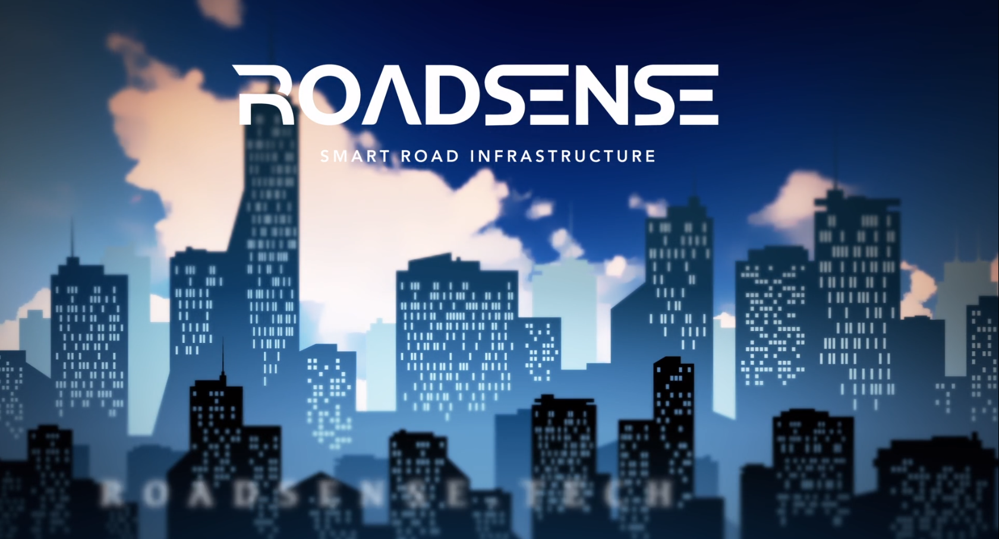

Grade: 4.00/4.00
Grade: 3.78/4.00
A featured engineering project combining embedded systems, machine learning, and IoT for intelligent transportation.

Developed an IoT-based road monitoring system using Arduino, IMU, GPS, DHT-22, and GSM modules with machine learning (Extra Trees Classifier), achieving over 96% accuracy in detecting potholes and road anomalies.
A list of my published papers and research contributions.
Below are the details to reach out to me!